場地：四個圈
整片草地以地標為中心，從裡到外分成幾圈。每一圈管的事不一樣。
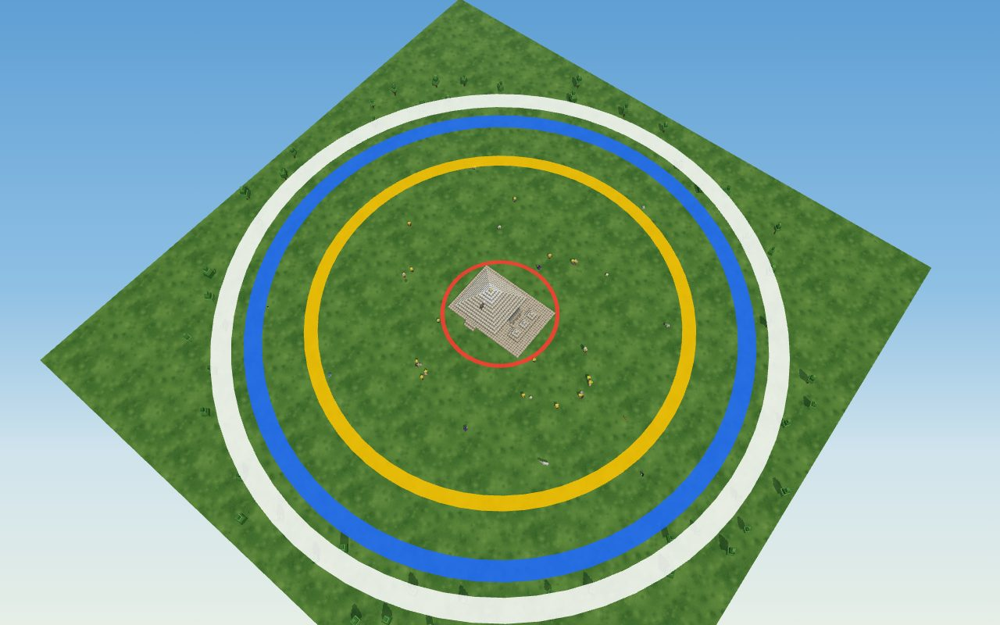
- 工地圈
- 地標本身佔的那塊地，再往外多一格多一點。大小跟著地標走：寬的建築工地圈就大（上圖的金字塔大約半徑 24 格）。 換場時推土機就是把這一圈裡的碎料推出去，推乾淨了小人才開工；消防車救火時停在工地圈外，不開進去。
- 生活圈
- 小人蓋自己的小房子、城牆的範圍就以這一圈為準。大小只看建材檔位，換地標不會變： 建材 1800 是半徑 68 格、3000 是 79 格、9000 是 128 格（只有匯入一座特別寬的建築才會被撐大）。
- 碎料圈（場地邊緣）
- 生活圈的 1.3 倍（3000 檔約 103 格），就是「場地」本身的邊界： 炸飛的積木飛不出這一圈；小人和動物閒晃最遠走到這裡；投石機、加農砲、弓箭手最遠架到這裡； 鏡頭用 WASD 平移也到這裡為止。
- 林帶
- 碎料圈外那一圈 54 棵樹（碎料圈外 3～23 格之間隨機散著種）。同一個建材檔位只種一次，換地標樹不會跳動。 林帶的中線（碎料圈外約 13 格）是進出場的門：天災、吉祥物、道具叫來的角色、 被打死之後補進來的小人和動物，都從這一圈走出來（從透明慢慢變實），要走時也走回這一圈淡掉。
- 草地島
- 整片綠地，邊緣在碎料圈外 26 格。開場與換場時鏡頭會配合島的大小取景。
| 建材檔位 | 生活圈 | 碎料圈 | 林帶中線 | 島邊 |
|---|---|---|---|---|
| 1800 | 68 | 88.4 | 101.4 | 114.4 |
| 3000 | 79 | 102.7 | 115.7 | 128.7 |
| 9000 | 128 | 166.4 | 179.4 | 192.4 |
單位都是「格」（一塊積木的寬度），量的是離場地中心的距離。
一座建築的一生
遊戲就是一直繞著這個圈：蓋好 → 被你砸爛 → 換下一座 → 小人重新蓋起來。
完工
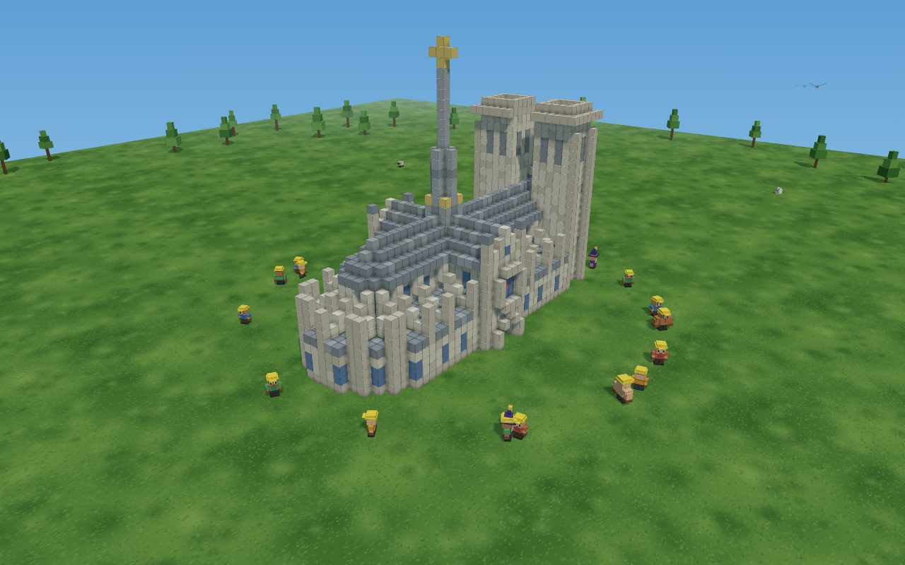
一進遊戲就是一座蓋好的地標。小人沒有工作，各自閒晃、過日子（見〈閒晃事件〉）。 只有這個階段天災才會來。
拆除中
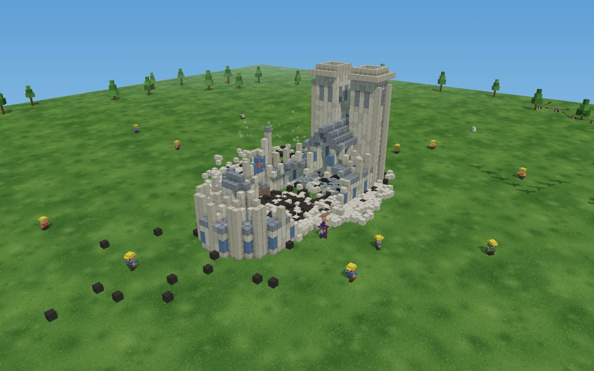
只要地標少了一塊就進入拆除中（你砸的、天災燒的都算）。小人照樣過自己的生活，不會幫你修回去。 拆到只剩 25% 以下，剩下的會自己垮掉，接著換下一座。
整地
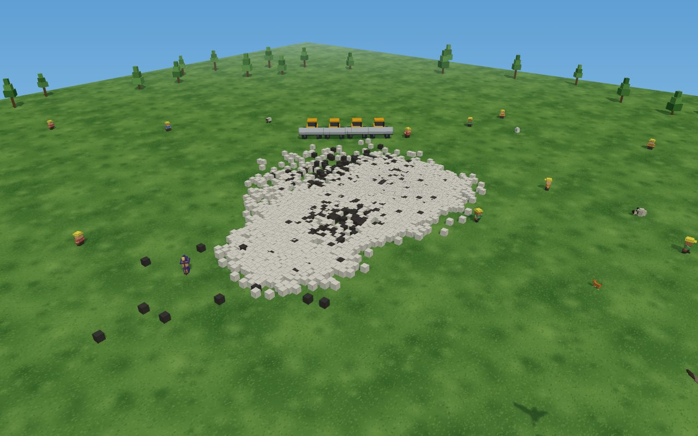
換場時舊建築整座散成碎料，一排推土機並排掃過工地圈，把碎料推出去。 推完小人才開工。整地中小人照常閒晃，推土機會直接從人身上穿過去。
施工中
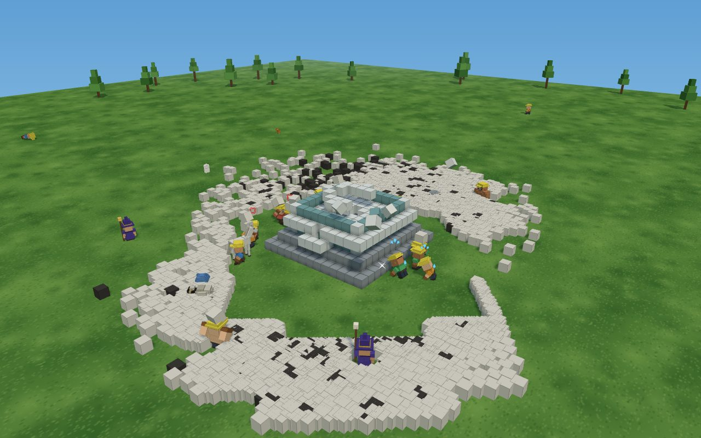
小人從地上撿積木、搬到工地、丟到該放的位置，從地面往上蓋（底下撐不住的格子不會先放）。 料不夠就自己從地上挖。施工中被砸的話，小人會把洞補回去（那是修補，跟拆除不同）。
慶祝
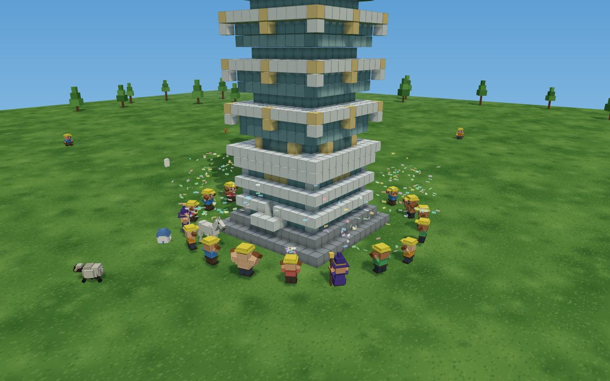
蓋好的那一刻，小人走到建築四周圍成一圈，面向建築原地跳、灑彩帶。 跳完就散場，回到「完工」，一輪結束。
立刻建成
⚙ 設定旁邊的 ⚡ 立刻建成：施工中、整地中按下去整座直接長出來。 這樣蓋好的不算人力費、施工計時也歸零，所以拿不到「花多少錢」「蓋多快」那類成就； 蓋過哪些地標、幾塊的大工程照記。
換一座來蓋：左下面板的按鈕，不必拆完就直接換下一座。 面板下拉選的是「下一座」蓋什麼，不會拆掉現在這座；按 🎲 改回隨機。
積木與垮塌
- 建材 · 碎料
- 地上散著的積木。被打下來的、垮下來的都會變成碎料，小人蓋下一座就是撿這些來用。 碎料點不到：拿道具點下去，會穿過碎料打到後面的建築或地面。
- 建材數
- 左下面板的 1800／3000／9000，決定一座建築大約幾塊積木（實際塊數照建築長相會差一點，畫面上方顯示的是真的塊數）。 檔位也決定場地大小（見〈場地〉）。
- 垮塌
- 積木只看「連不連得到地面」：打穿牆腳，上面只要還靠旁邊撐著就不會掉；整片都接不到地的那一塊才會掉下來， 所以會出現一路連鎖垮下去的場面。斜角碰到也算撐著；不算力矩，伸出去很長的懸臂只要還連著就不會斷。
- 內建藍圖 · 自訂藍圖
- 48 座內建建築（地標、動物、交通工具、特殊各一組），加上
blueprints/資料夾裡的自訂藍圖（選單上排在最前面、標 ★）。 自訂藍圖可以用藍圖預覽.html請 AI 幫忙做，遊戲裡的 📥 匯入建築 也能直接吃。
小人
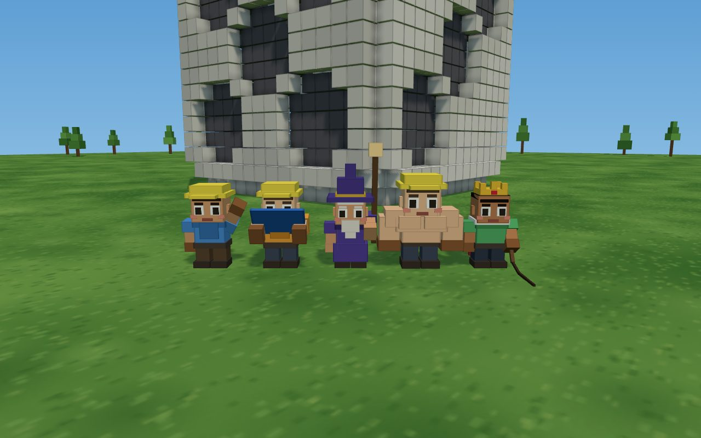
- 一般小人
- 戴安全帽的工人。施工中搬料、蓋、補洞；沒事時閒晃、聊天、表演。人數在左下面板選（20／40／60）。
- 工程師
- 兩個人以上就固定有一個。不搬料，站在工地旁邊看藍圖、指揮。
- 魔法師
- 每十個人裡有一個（戴紫色巫師帽、拿法杖）。不用走過去撿，站在料堆旁邊隔空把碎料拋到要放的位置。
- 肌肉小人
- 每十個人裡也有一個（打赤膊、比別人大一號）。撿起積木不走過去放，就地掄過去，所以蓋得特別快。
- 國王
- 只在閒晃事件「蓋皇宮」出現：抽一個小人戴上金王冠、披紅披風、拿鞭子，指揮其他人幫他蓋皇宮。
- 表情圖示
- 小人頭上冒的小圖：! 嚇到、? 疑惑、愛心、生氣、汗滴（累了在喘）。
- 被打死
- 小人和閒逛的動物被打滿 3 次就會死（天災、吉祥物的攻擊、小人射的箭都算，水不算，次數不會恢復）。 倒在地上、漫開一攤血，躺一下淡掉，然後從林帶走進一個新的補上（小人會接著住原本那間家）。
小人的行為邏輯
每個小人每一刻都照下面這張表由上往下看，碰到第一個成立的就做那件事，下面的就先擱著。 所以「被炸飛」一定比「搬料」優先，「逃命」一定比「慶祝」優先。
- 被吸走：被幽浮、小黑洞吸進去的那段時間，一切交給它們。
- 在飛：被炸飛、被龍捲風捲走，照拋物線飛，落地才算數。
- 著火：在地上打滾，或抱著頭繞圈跑，燒完拍拍灰站起來。
- 死了：被打滿三次，躺著、淡掉，換一個新的進場。
- 倒在地上：被戳倒、被震倒、自己走路絆倒（自己絆的是往前趴）。爬起來時頭上冒生氣（被水澆熄火的不生氣）。
- 逃命：核彈、爆裂魔法有預告，一出現全場都往反方向跑（手上的積木丟掉、頭上冒驚嘆號）， 跑到安全的距離停下來回頭看。其他道具沒有預告，不會逃。
- 聊天、打架：閒著的兩個人走近了會聊天，偶爾談不攏打起來。被打擾（被炸、被點火、開始慶祝）就中斷。
- 沒有工地要顧的時候（完工、拆除中、整地中）： 剛完工先慶祝；慶祝完，被閒晃事件排到的人去做那件事（蓋房子、蓋城牆…），其他人閒晃。
- 施工中：
- 偷懶的人不上工，照閒晃那一套過日子（施工中也會有閒晃事件，只有偷懶的人參加）。被道具打倒在地就收心回去上工。
- 工程師看圖指揮；魔法師隔空拋料。
- 其他人：連續做太久就當場停下來彎腰喘一口氣（手上的積木先放在腳前）； 否則領一張工作單 → 走去撿料 → 搬回工地 → 丟上去。地上沒有料可撿就自己挖；沒有格子可蓋才去閒晃。
閒晃時會做的事
- 閒晃
- 在整片碎料圈裡隨便挑一點走過去、站一下、再挑下一點。
- 表演
- 站定發呆時偶爾來一段：跳舞翻跟斗伸懶腰原地轉圈開合跳拍手揮手， 附近有牛羊時還會拿弓射一箭（中箭的牛羊躺五秒再爬起來小跑開）。接到工作就當場收掉。
- 走路的規矩
- 照建築真正蓋到哪裡算：還沒蓋的地方、底下空著的地方（拱門、塔腳之間）直接穿過去，蓋好的繞開。 碎料埋在實心建築裡就站在牆外隔空拿；掉在建築圍住的空地上就穿牆進去撿。
偷懶與小人模式
畫面左下角那顆 😌悠閒／😐普通／😤高壓，決定施工中有幾成的人偷懶：50%／20%／5%（預設普通）。 每蓋一座重抽一次誰偷懶；施工中換檔立刻生效。
閒晃事件
小人沒事幹的時候（完工後慶祝完、拆除中、整地中），一定會從下面七件裡隨機抽一件來做。 施工中偷懶的人也會做。
這些東西都是真的積木：會被道具打壞、會垮、會有人回來補洞（皇宮例外）。
蓋自己的小房子
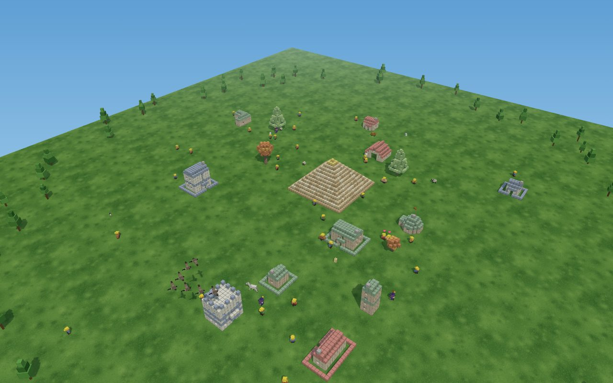
一半左右的人離隊，就近從地上挖積木蓋房子（十八款），剩下的人再抽幾個去種樹。蓋完在自己家附近走走。
蓋城牆
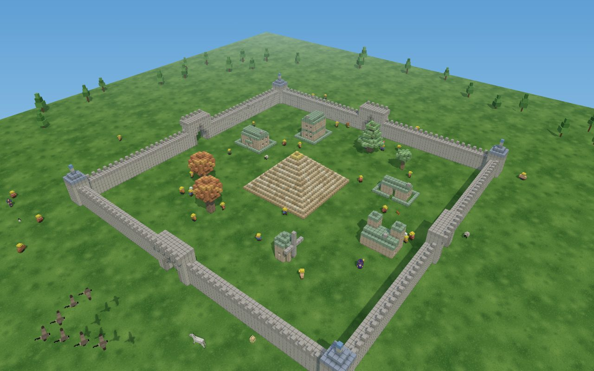
把地標整圈圍起來：方牆、四座角樓、四面正中央各一座城門樓。城牆擋小人和動物（門洞走得過去）， 城內只留幾間小房子和樹。巨人和 Diablo 太高鑽不過門，擋路就直接清掉。
蓋商店街
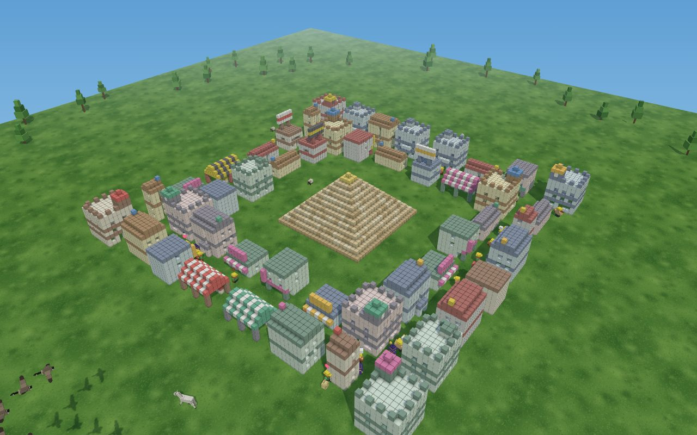
繞著地標一面一面長：一條街 → 十字 → ㄇ字 → 口字。店面對開、門朝街。蓋好就逛街， 看到哪間在蓋或被打壞就過去幫忙。
種樹林
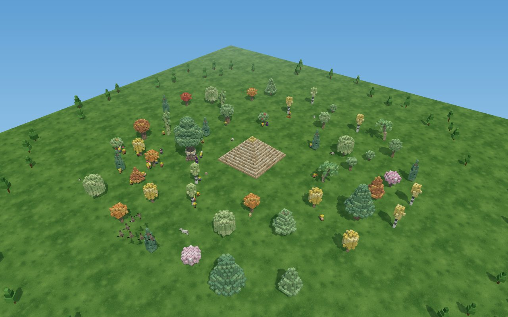
從一棵神木那一叢開始，往兩邊一叢一叢長，直到整圈接起來。十九款樹（櫻花、楓樹、銀杏、柳樹、椰子、竹叢…還有兩倍大的巨杉、巨橡）。 種好就在林子裡散步。
蓋皇宮
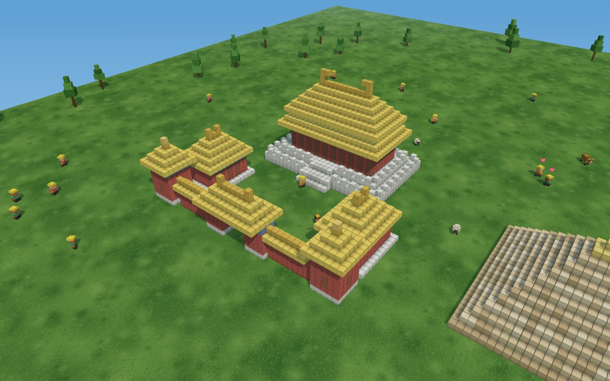
抽一個人當國王，其他人被奴役去幫他蓋（中式宮殿或西式王宮隨機一款）：主殿 → 兩翼 → 宮牆宮門 → 角樓。 國王在旁邊指人、偶爾抽一鞭。蓋好國王住進去，其他人被趕到外圍流浪；打壞了沒人修。
蓋部落
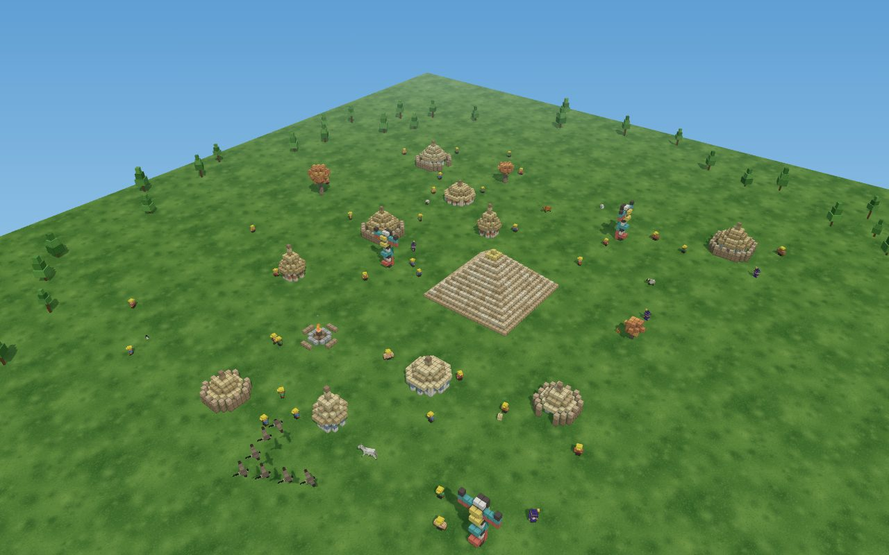
跟蓋小房子一樣，只是換成原始部落的小屋（茅草圓屋、圓錐帳篷、高腳屋、長形茅草屋，一村同一種）。 再加一堆會一直燒的營火和幾根圖騰柱。
拼求救招牌
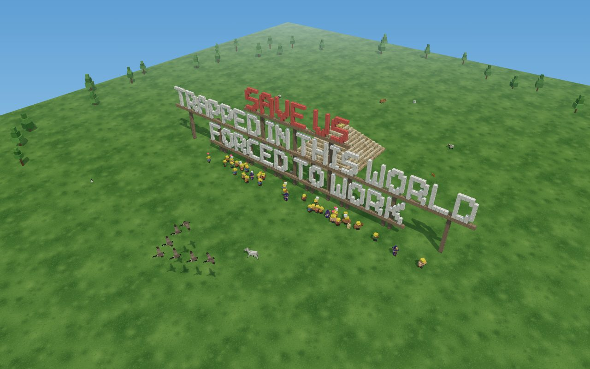
在地標正前方用積木拼出三行字：SAVE US／TRAPPED IN THIS WORLD／FORCED TO WORK。 一個字母一個字母拼，拼好大家走到字前面轉向鏡頭揮手。
動物
- 閒逛的動物
- 場上一直有 8～12 隻，二十二款，一款一個腳程，在整片碎料圈裡到處走。不會動手，只是住在這片草地上。 也打得到、會被打死（死了從林帶補一隻新的）。
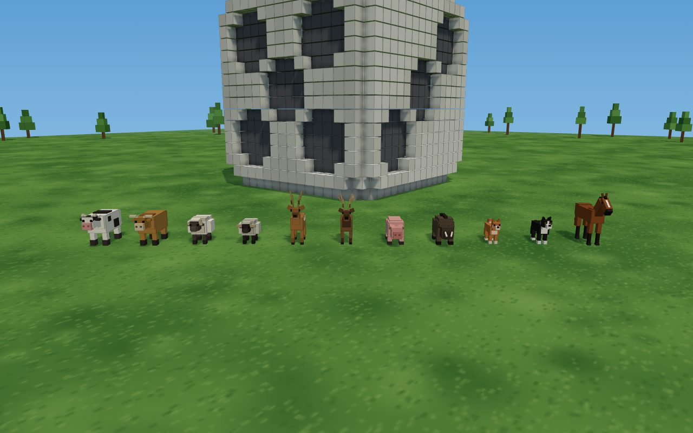
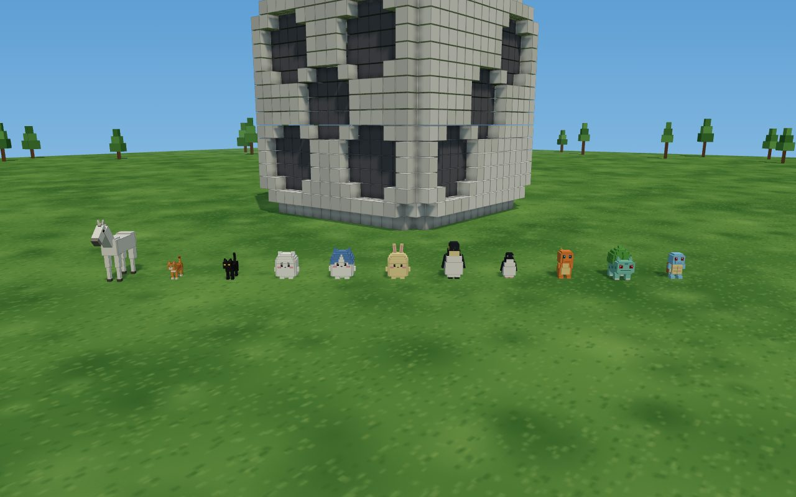
- 睡覺
- 走到一個點停下來時有機會趴下睡（兩條腿的坐著打瞌睡），頭上飄 Z。晚上大約一半在睡，白天偶爾打盹。被打到才會醒。
- 雁群
- 每 40～80 秒一群 5～9 隻排成 V 字從天上飛過。打得到，打中就掉下來。
- 🍖 肉
- 一把道具：丟一塊肉，40 格內最近的 3 隻閒逛動物小跑過來圍著吃，吃完才散。拿來把動物引到想要的地方。
天災
不是你叫的，是自己找上門來砸地標的。
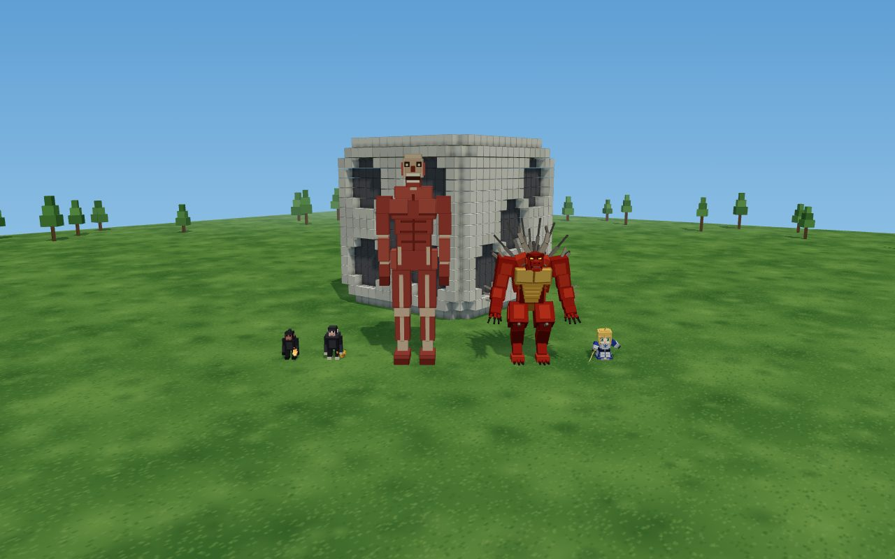
- 什麼時候來
- 只在完工、地標好好站著的時候倒數，大約每 8～12 分鐘來一件（照遊戲時間，開 4 倍速就快 4 倍）。 一次一件，這件演完才會數下一件。
- 六種天災
-
🐒 小獼猴：拿火把把地標點著，火會自己蔓延。
🐵 小猴子：把香蕉炸彈丟到地標上。
🐉 飛龍：在 40 格高盤旋，吐火球往建築底部噴。
🗿 巨人：15 格高，走過來一腳一腳踹，踹中的地方炸開起火。
⚔ Saber：把劍舉過頭頂，Excalibur 整條光柱斬下來。
😈 Diablo：10 格高，前傾張嘴噴一道長火柱。 - 打退它
- 天災被你用道具打中 2～3 次就放棄走人（每打中一次之後有 3 秒冷卻，這段時間再打不算）。 巨人和 Diablo 還可以被幾招大招直接斬殺（兵長砍猴、核彈、爆裂魔法、Excalibur、虛式「茈」、光之太刀）。
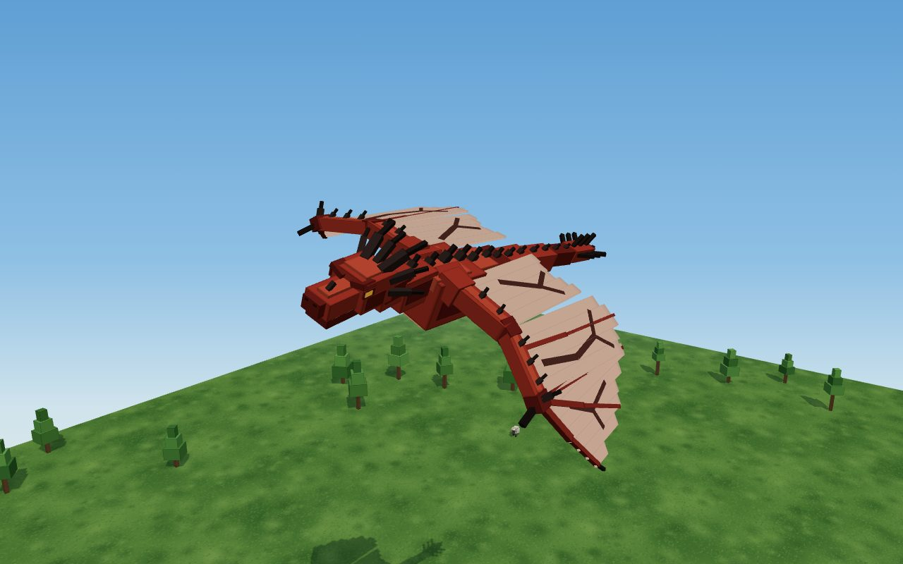
吉祥物
跟天災是同一批動物、角色，但是站你這邊的：來逛一逛就走，偶爾才動手，而且自己來砸的那一趟只砸村子那邊（小房子、城牆、樹），不碰地標。
- 來逛
- 每一隻各自隔 3～6 分鐘來一趟，逛 50～60 秒才走。道具叫來的角色做完事留下來逛也是這麼久。
- 偶爾動手
- 每一輪（每一隻各來一次）全場平均只有一隻是來砸的。吉祥物越多，每一隻抽中的機會越小，全場被砸的頻率不變。
- 打牠會改變主意
- 吉祥物被道具打中一次就翻轉一次：本來要砸的收手回去逛，本來只是逛的會生氣，隨手挑村子或地標動手。 同樣有 3 秒冷卻。
- 各自的脾氣
- 🐒 小獼猴打不退：打幾下就多燒幾處。🐵 小猴子只能動手一次（香蕉丟了就沒了）。 💥 惠惠從不主動，被打才生氣，退到爆炸範圍外放一發爆裂魔法，放完魔力用光躺 30 秒。 🛡 芙莉蓮只逛不動手。🟣 五條悟打不到，所以也不會被惹毛。
- 只當吉祥物的
- 🦅 獅鷲：飛進來降落逛一圈。動手那一趟從空中俯衝撞穿過去，沿路撞飛積木、小人、動物。
💥 惠惠：見上面的脾氣。
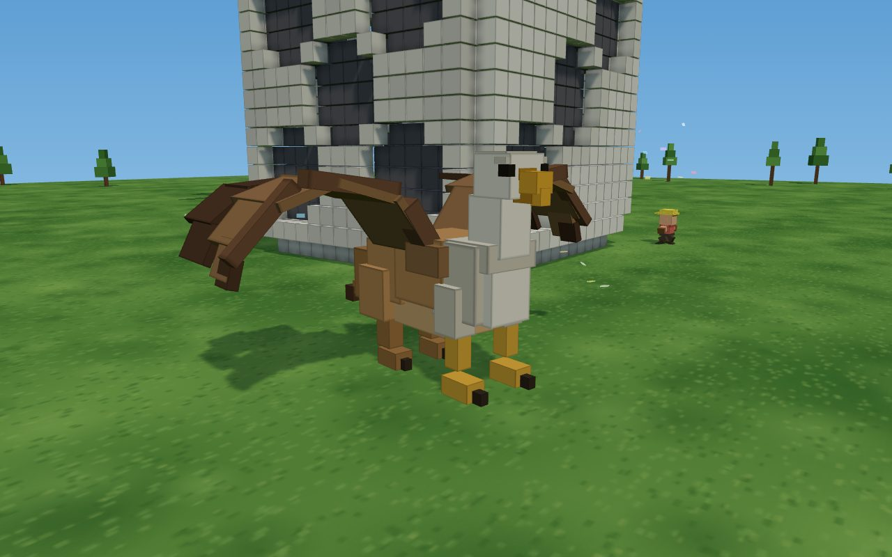
道具角色
有幾把破壞道具不是直接打下去，而是叫一個角色跑來出招。這幾位也會自己當吉祥物來逛。
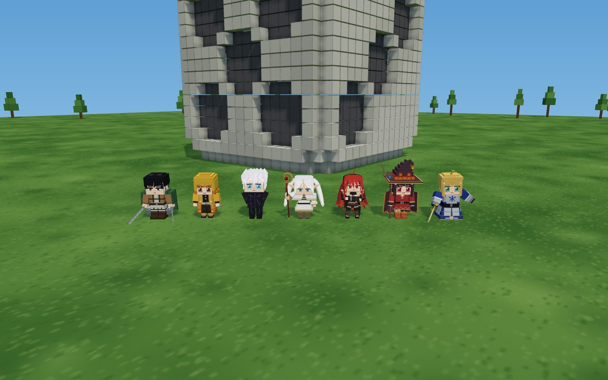
| 角色 | 道具 | 點下去會怎樣 |
|---|---|---|
| Saber | ✨ Excalibur | 跑到光柱射程一半的地方，舉劍集氣，整條光柱斬下去。她也是天災之一。 |
| 里維兵長 | 🌀 兵長砍猴 | 射出鋼索、用立體機動裝置飛過去，繞著建築或目標一陣狂砍。巨人、Diablo 會被斬殺。 |
| 我妻善逸 | ⚡ 霹靂一閃 | 蹲成居合架勢，一閃八連，在那一點四周亂竄、貼地削掉最底下幾層，沿路的人和動物全部沖飛。 |
| 五條悟 | 🟣 虛式「茈」 | 赫與蒼合成茈，直線穿過去，沿路把積木、小人、動物吸進去轉，最後甩出去。他什麼時候都打不動（無下限）。 |
| 芙莉蓮 | 🛡 防禦魔法 | 保護用的：她身邊 8 格內被攻擊就自動張開防護罩（見下面〈破壞道具〉的圖）。 |
| 艾莉絲 | 🌙 光之太刀 | 撲上前一刀斬下，一道無形的劍氣沿著隨機方向的切面砍穿整座。 |
| 惠惠 | （不是道具） | 只當吉祥物，被打才放爆裂魔法。 |
點空地是叫角色跑到那裡待命；場上沒有那一位時，他會從離目標最近那一邊的林帶跑進來。 里維、善逸、艾莉絲出招那幾秒什麼都打不動；五條悟是什麼時候都打不動。
破壞道具
畫面上方的工具小窗，滑鼠指上去展開選單。一共 32 把，照種類分成六類。下表的說明就是遊戲選單裡那一句。
- 解鎖
- 👆手指、🪣水桶、🔨槌子一開始就有；其餘照順序，每累計擊飛 4000 塊開一把。
- 道具泡泡
- 另一條解鎖的路：破壞積木有機率掉一顆泡泡（平均每 9000 塊一顆），裡面裝一把你還沒解鎖的道具。 泡泡停在地上不會消失、換場也留著，點下去那一把當場解鎖（不照順序，可能先拿到核彈）。
- 破壞模式
- 工具小窗左邊的開關。開著時點一下就放到場上的上限：例如隕石一次 6 顆、龍捲風 4 道、核彈 4 顆，第一份落在點的那一點，其餘散在附近。
- 點兩下的道具
- 保齡球、投石機、龍捲風、大劍、箭雨、加農砲、火槍兵、彈跳球、天降鐵球、王之財寶、燈源：第一下點位置，第二下點方向或目標。
- 快捷鍵 1～9
- 上方橫條的 ⌨ 快捷鍵可以把道具綁到數字鍵（桌機）。
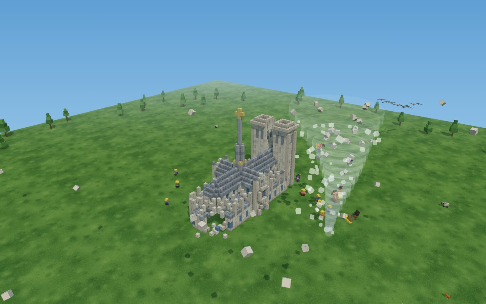
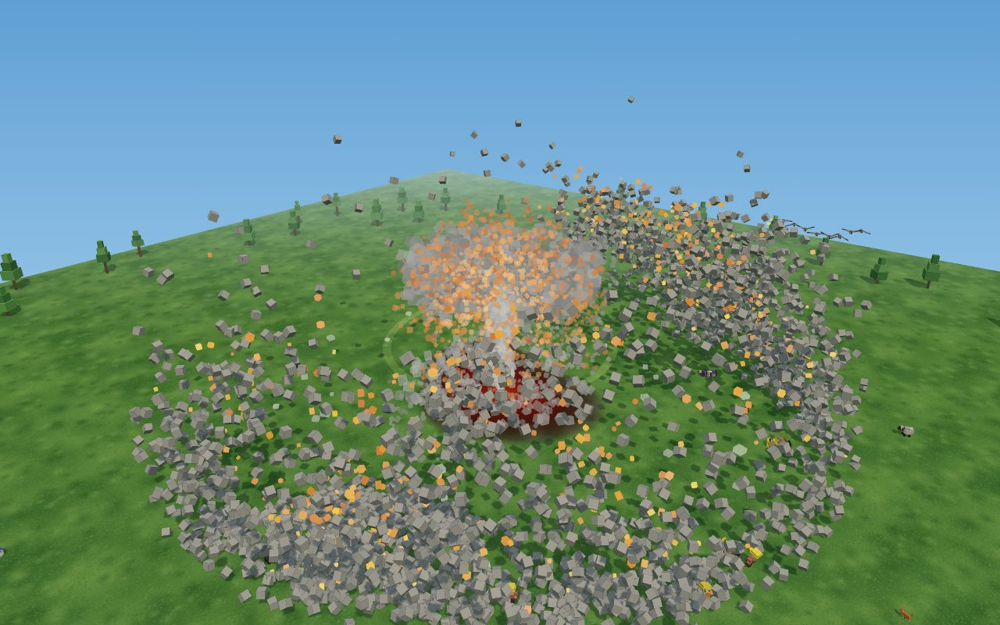
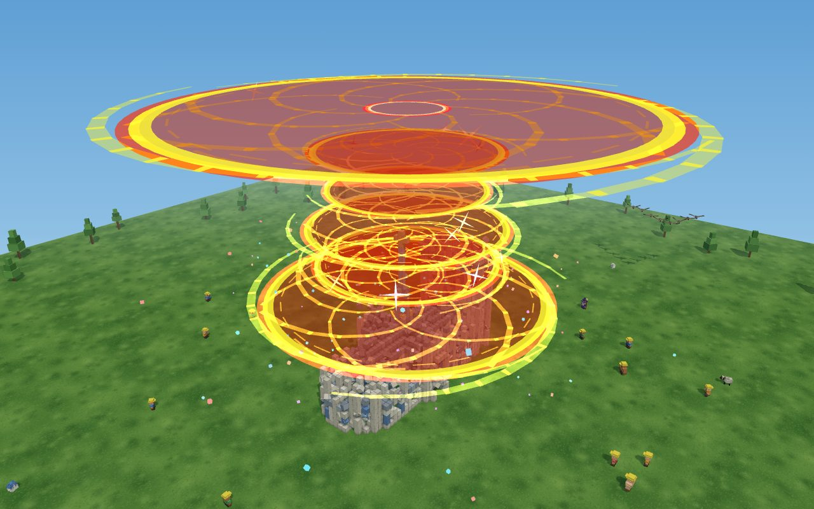
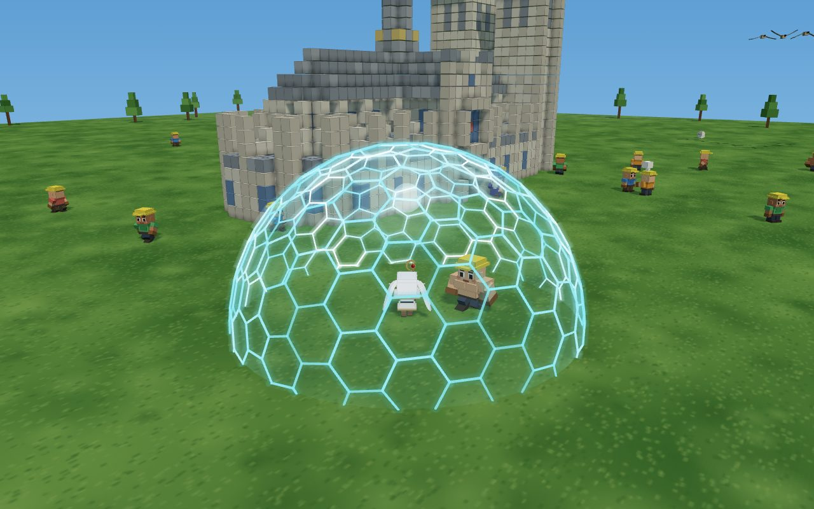
| 類別 | 道具 | 說明（遊戲選單裡那一句） |
|---|---|---|
| 不破壞 | 👆 手指 | 不破壞任何東西，只能戳小人 |
| 🪣 水桶 | 點一下：倒一大缸水，積起來的水會從破洞噴出去；淋濕的積木與小人 5 秒內點不著 | |
| 🍖 肉 | 點一下：丟一塊肉，40 格內最近的 3 隻閒逛動物小跑過來圍著吃，吃完才散 | |
| 🔦 燈源 | 點兩下：先點燈架立在哪，再點要照的地方——晚上才照得亮，燈架＋火把最多 4 座，被打壞就熄 | |
| 🕯 火把 | 點一下：插一支火把，晚上照亮周圍——火把＋燈架最多 4 座，被打壞就熄 | |
| 敲打丟擲 | 🔨 槌子 | 點建築：點狀衝擊 · 槌下的生物與小人會倒（點在牠身上、點旁邊的地面都算） · 點地面：建築不受影響 |
| 🔨 大槌 | 點建築：兩倍大的槌子，範圍是小槌的三倍 · 點地面：地震，震掉 10% 的積木 | |
| 🎳 保齡球 | 點兩下：先點出手的地方，再點要滾過去的方向 | |
| ⚫ 天降鐵球 | 點兩下：先點出手的位置，再點要砸的地方——鐵球從上空拋過去、削掉砸中的那一片（同一點點兩下就直直砸） | |
| ⚔ 大劍 | 點兩下：從第一個位置砍到第二個位置——那兩點之間就是刃掃過去的那一片，整片削掉（點天空那一下不算） | |
| 🟠 彈跳球 | 點兩下：先點出手的位置，再點要丟過去的地方——24 顆彈跳球飛過去，撞一下咬一小口就彈開，越彈越低 | |
| 軍隊器械 | 🪨 投石機 | 點兩下：先點機台架設的位置，再點要轟的地方（點建築就瞄那個高度）——一次架 4 台，各丟 5 顆石頭 |
| 🏹 箭雨 | 點兩下：先點弓箭手站的位置，再點要射的地方（點建築就瞄那個高度）——八十人齊射三輪，每支箭咬掉一小片 | |
| 🔫 加農砲 | 點兩下：先點架砲的位置，再點要轟的地方（點建築就瞄那個高度）——3 門砲各打 6 發，打到就炸開起火 | |
| 🎌 火槍兵 | 點兩下：先點火槍兵站的位置，再點要打的方向（點建築就瞄那個高度）——六十人三段擊九輪齊射 | |
| 火與爆炸 | 🎆 煙火 | 點地面：一次射三發煙火，落下來的火星會把建築點著；點在建築上就從那一點射上去 |
| 🔥 放火 | 點建築：從那一塊燒起來，火會往旁邊蔓延 | |
| 💣 定時炸彈 | 點一下：放一顆炸彈，3 秒後炸開 | |
| ☢ 核彈 | 點一下：2 秒後天上掉核彈下來 | |
| 天災異象 | 🌪 龍捲風 | 點兩下：先點龍捲風出現的地方，再點要掃過去的方向（會一路亂竄 10 秒，罩到的建築每秒吸走七成） |
| ☄ 隕石 | 點一下：3 秒後從斜上方砸下一顆燃燒隕石，可以同時來好幾顆 | |
| 🌩 打雷 | 點一下：烏雲捲到那裡的上空，3 秒後劈下一道粗雷，從屋頂一路貫穿到地面，劈到的全部燒起來 | |
| 🛸 幽浮 | 點地面：幽浮飛來吸走光圈裡的積木與小人動物，5 秒後從天上撒滿整座島 | |
| 🕳 小黑洞 | 點一下：範圍內的積木、小人動物被吸進黑洞消失，5 秒後從天上撒滿整座島 | |
| 動漫招式 | 💥 爆裂魔法 | 點一下：魔法陣一層層展開，6 秒後爆炸 |
| 🗡 王之財寶 | 點兩下：先點地面開門陣，再點要打的地方（點建築就瞄那裡）——兵器連射 7 秒，打中就炸出小缺口 | |
| ✨ Excalibur | 點建築、生物或小人：叫 Saber 跑來，在光柱射程一半處斬下；點空地：跑到那裡待命 | |
| 🌀 兵長砍猴 | 點建築、生物或小人：叫里維跑來射鋼索飛過去一頓狂砍；點空地：跑到那裡待命 | |
| ⚡ 霹靂一閃 | 點建築、生物或小人：叫善逸跑來，霹靂一閃八連在範圍內亂竄、貼地削過去；點空地：跑到那裡待命 | |
| 🟣 虛式「茈」 | 點建築、生物或小人：叫五條悟跑來放出茈，沿路吸進去轉、最後甩出去；點空地：跑到那裡待命 | |
| 🛡 防禦魔法 | 點一下：叫芙莉蓮跑過去再四處逛；她身邊 8 格內被攻擊就自動張開防護罩 | |
| 🌙 光之太刀 | 點建築、生物或小人：叫艾莉絲跑來拔劍一閃，劍氣隨機方向砍穿整座；點空地：跑到那裡待命 |
點小人：只有👆手指戳得倒、🔥放火點得著、🔨槌子砸得倒；動漫角色那幾把是叫角色去打他。其餘道具的射線直接穿過小人，打到他背後的東西。
水與火
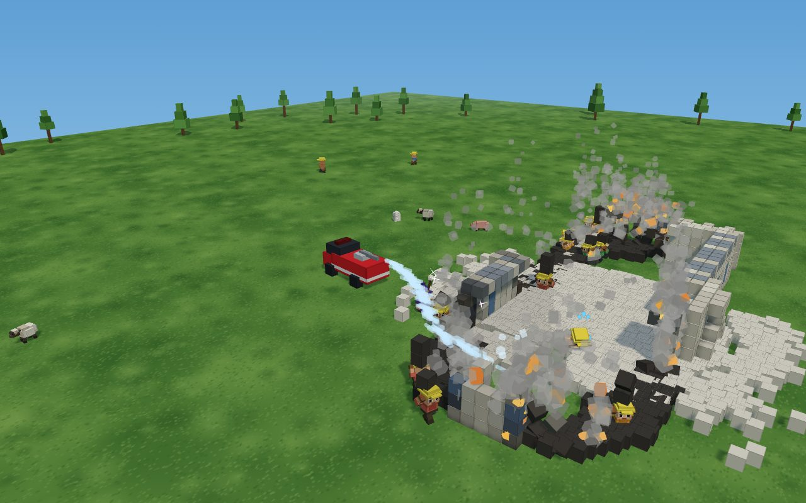
- 火
- 會往旁邊的積木蔓延，燒過的積木變焦黑、鬆脫掉下來。小人著火會打滾或繞圈跑。
- 積木型的水
- 🪣水桶倒出來的水是一格一格的積木，會流、會積，杯子形狀的建築破了洞就從破口噴出去。
- 潮濕
- 淋到水的積木和小人濕 5 秒，這段時間點不著。
- 消防車
- 施工中失火才會來（完工、拆除中燒的不救），停在工地圈外，車尾的水砲把水柱噴進火場。
- 焦痕
- 隕石、核彈、爆裂魔法炸過的地上、Excalibur 光柱掃過的地上，會留下一片燒焦的痕跡。
錢、紀錄與成就
- 人力費
- 每個小人每秒 $3，只在施工中累積。上方橫條的「本次人力」是這一座花的，「累計」是全部加起來。
- 破壞損失
- 每一塊被打下來的積木算 $85。
- 拆掉 · 擊飛
- 上方橫條的「拆掉幾座」「擊飛幾塊」是累計拆掉的建築數與打下來的積木數。解鎖新道具看的是擊飛數。
- 成就
- 十九個，分蓋、拆、小人、錢四組，每組都有入門和下一階。上方橫條的 🏅 成就打開。
- 存檔
- 紀錄和設定自動存在瀏覽器裡。成就面板上的 ⬇ 匯出存檔／⬆ 匯入存檔可以搬到別台電腦（匯入是整個覆蓋）。
畫面與設定
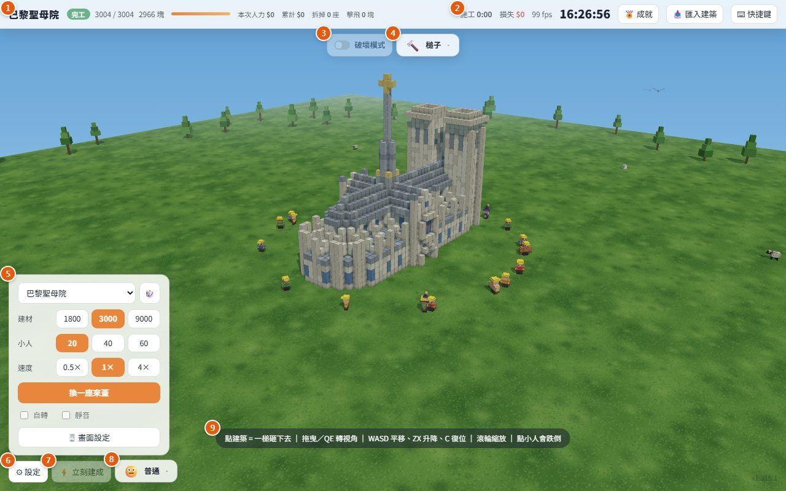
| 位置 | 是什麼 |
|---|---|
| 1上方橫條（左） | 建築名、狀態（完工／施工中／拆除中／整地中）、進度、本座人力費與累計、拆掉幾座、擊飛幾塊。 |
| 2上方橫條（右） | 本座施工計時、累計破壞損失、fps、現在時間，以及 🏅 成就、📥 匯入建築、⌨ 快捷鍵三顆按鈕。 |
| 3破壞模式 | 開著時點一下就放到場上的上限（見〈破壞道具〉）。 |
| 4工具小窗 | 現在拿的道具；指上去展開選單換一把。 |
| 5左下面板 | 下一座蓋什麼、建材數、小人數、時間倍率（0.5×／1×／4×）、換一座來蓋、自轉、靜音、🖥 畫面設定。一動手玩就自己收起來。 |
| 6⚙ 設定 | 把左下面板叫回來。 |
| 7⚡ 立刻建成 | 施工中、整地中按下去整座直接蓋好（見〈一座建築的一生〉）。 |
| 8小人模式 | 😌悠閒／😐普通／😤高壓，決定施工中幾成的人偷懶。 |
| 9操作提示 | 現在這把道具怎麼用，加上鏡頭的操作。 |
- 鏡頭
- 拖曳轉視角、滾輪縮放；桌機另有 WASD 平移、Q／E 轉、Z／X 升降、C 回到開場鏡頭。
- 晝夜
- 照電腦的時鐘，每小時前 30 分鐘是白天、後 30 分鐘是晚上（畫面設定裡可以關掉，關掉就一直是正午）。 晚上燒的火、煙火、飛龍的火球、🔦燈架、🕯插著的火把會照亮周圍。
- 🖥 畫面設定
- 鎖 60fps、積木 AO（凹角變暗比較立體）、光源盞數（預設 10 盞）、燈架影子（預設開）、晝夜、跟不上時自動降畫質。覺得卡可以從這裡調。 光源選「關」的時候沒有 🔦燈源和 🕯火把這兩把道具。